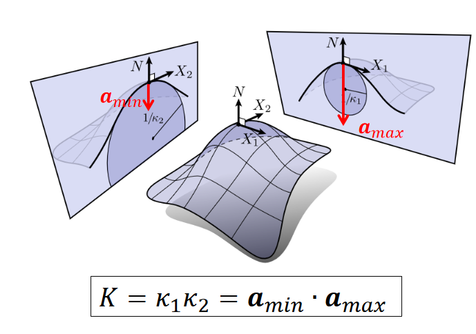
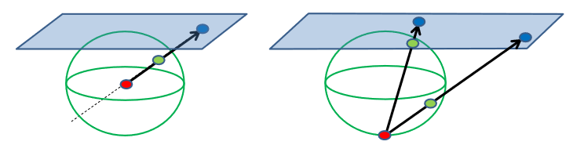
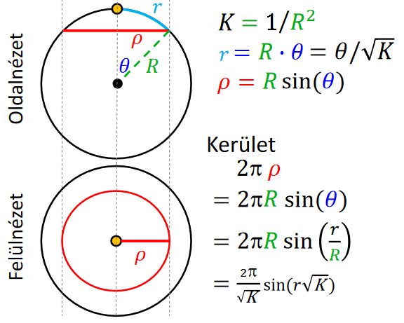
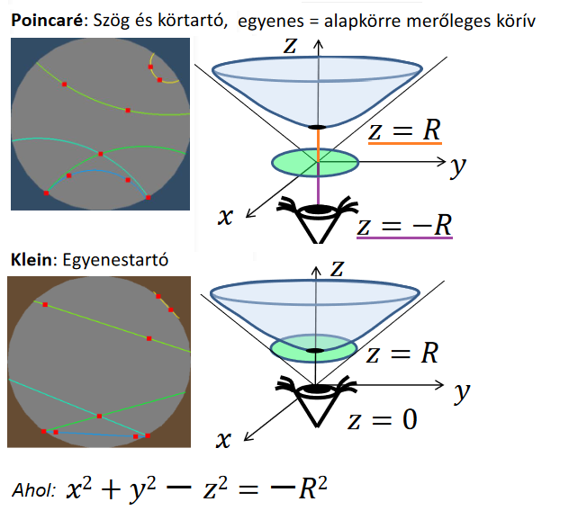
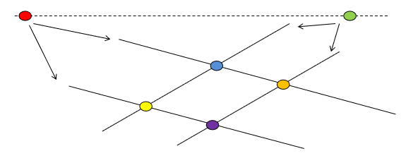
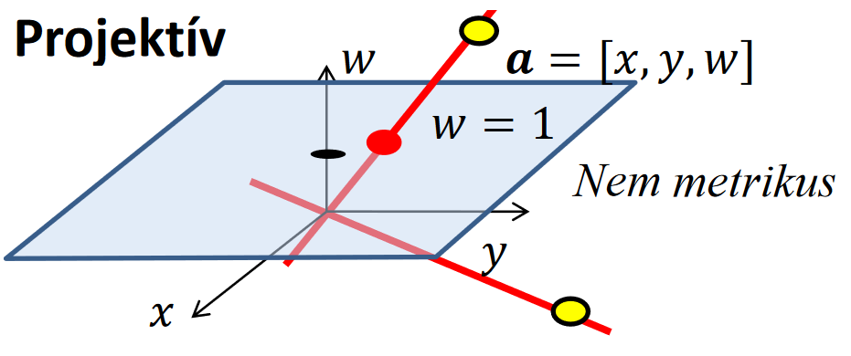
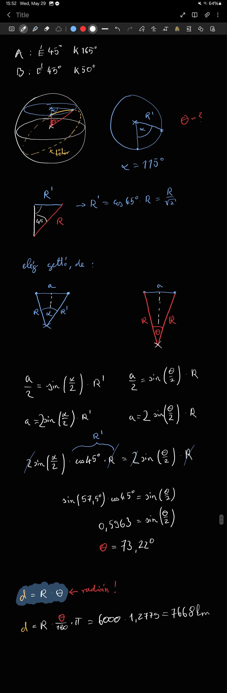

Geometriák és algebrák:
A geometriák különböző axiómákra épülnek. Például az Euklidészi síkgeometriában az egyik legfontosabb, hogy egy egyenesre egy külső pontból legfeljebb 1 olyan egyenes húzható, ami nem metszi (ez a párhuzamos)
- Ezeknek az axiómáknak a megváltoztatása különböző eredményekhez vezethet. Például a háromszög szögeinek összege mindig:
- Hiperbolikus geometriában: \(< 180°\)
- Euklidészi geometriában: \(180°\)
- Gömbi geometriában: \(> 180°\)
Görbület
-
Görbék görbülete:
- Egy adott pontra az alábbi két definíció egyikét használhatjuk:
- A görbület az egysebességű centripetális gyorsulás (\(a_{cp} = \frac{v^2}{R}\), egysebességű = a sebesség nagysága állandó)
- A simuló kör sugarának reciproka

- (\(\kappa = \frac{1}{r} = \frac{v^2}{r}\))
- Egy adott pontra az alábbi két definíció egyikét használhatjuk:
-
Gauss görbület:
- Egy felület (mondjuk henger) görbületét szeretnénk meghatározni egy adott pontban. (Ebben a pontban a felületnek van egy normálvektora, ami merőleges a felület síkjára).
- Ekkor az alakzatot a felvághatjuk síkokkal (amik a pontot metszik és a normálvektorral párhuzamosak)
- Azek a síkok bármerre állhatnak és a felületet ahogy metszik, úgy egy görbét határoznak meg. Az így kapott görbék közül van 2, ahol az egyiknél minimális a görbület, a másiknál maximális. Ezek a metszési irányok egymásra merőlegesek (ezek a principális / főgörbületi irányok)
- Az itt található görbületek szorzata a Gauss-görbület
- 
- Részletesebben (a diasorokon voltak még további alakzatok, ezeken érdemes ezt végig gondolni, a legfontosabb, hogy a normállal mindig párhuzamosak ezek a metszések)
Gömbi geometria
- Gömb egyenlete: \(x^2 + y^2 + z^2 = R^2 = \frac{1}{K}\)
- Itt a görbület állandóan pozitív, az egyenesek is görbék
- Fontos változás:
- Két pont nem mindig határoz meg egy egyenest egyértelműen
- Két egyenes mindig 2 pontban metszi egymást
- Itt 0 darab nem metsző egyenes van (még a párhuzamosok is metszik egymást)
- Főkör: 2 pont és a gömb közepe meghatároz egy síkot. A kör, ami a sík és gömb metszésével jön létre a főkör (Nem mindig lehet egyértelműen meghatározni, pl. Északi sark, Déli sark, Origó pontokkal végtelensok sík van)
- Gömbi geometriában a legrövidebb út két pont között mindig a főkörön van
-
Elliptikus geometria: olyan geometria, ahol az átellenes pontok egynek számítanak
-
Gömbök vetítése: 
- Középpontos vetítés:
- csak a felső gömböt
- egyenes tartó
- nem kör, szög és távoltástartó
- Sztereografikus vetítés:
- a déli pólus kivételével mindent
- nem egyenestartó
- kör és szögtartó, de nem távolságtartó
- Középpontos vetítés:
-
Mercator térkép: hengerre vetít a gömb középpontból, de emiatt megnyúlik.
- Szögtartó
- Nem távolságtartó
-
Számolások gömbi geometriánál:
- A görbület: \(\kappa = 1/R^2\)
- Távolság: \(R \theta = \theta / \sqrt{\kappa}\) (ez egy körív, ahol 2 pont között \(\theta\) szög van - radiánban)
- Kör kerülete: 
- Háromszögek:
- \(a^2 + b^2 > c^2\)
- \(T = (\alpha + \beta + \gamma - \pi) / \kappa\)
Hiperbolikus geometria
- Hiperboloid egyenlete: \(x^2 + y^2 - z^2 = -R^2 = \frac{1}{\kappa}\)
- Ez levezethető komplex számmal is \((iR)^2\)
- Itt a görbület állandóan negetív
- Fontos változások:
- Egy egyenesre egy külső ponból több nem metsző egyenes húzható
-
Hiperbolikus terek vetítése egy diszkre: 
-
Emlékeztető a 3. háziból - 2 kör merőleges:

Minkowski tér
- A háromdimenziós teret kiterjesztjük egy negyedik dimenzióval, ami az idő
- Itt nem pontok, hanem események vannak jelen
- Mert ugyanaz a hely szerepelhet kétszer, de különböző időpontokban más-más esemény közben van
- Ebben a rendszerben a távolságot úgy kell érteni, hogy \(x_1\) helyről \(t\) idő alatt egy hatás elér-e egy \(x_2\) helyre
Projektív geometria
a GPU mindegyik geometriát támogatja, de projektív geometriában gondolkodik
- Euklideszi geometriában nem beszélhetünk végtelenről, viszont a projektív geometriában létezik.
- Fontos változás:
- Itt két egyenes pontosan egy pontban metszi egymást (vagy 1 pontban metszenek, vagy a végtelenben. Ha azon gondolkodnál, hogy de balra és jobbra is van végtelen, az ne aggasszon, mert az a pont jobbra és balra ugyanaz a végtelen)
- Ez a rendszer nem metrikus, mert nem lehet pl. távolságról beszélni, hiszen ha a végtelen is része, akkor ami végtelen távol van, azt nem lehet számításba venni
- Nincsenek olyan koordináta rendszerek, amik távolságokat használnak (fentebb említett ok miatt) - Vagyis Descartes és Polár koordinátarendszerek nem használhatók
- 
- Itt a zöld és a piros pontok az ideális pontok ahol az egyenesek metszenék egymást. Mivel a geometriánkban végtelen sok egyenes lehet, ezért a piros és zöld pontok között végtelen sok ideális pont lehet még.
- Ha átgondoljuk, hogy van végtelen sok ideális pont, amik jobbra és balra nézve is önmaguk képviselik, akkor láthatjuk, hogy ez egy elliptikus geometria (fogalma fentebb) csak szög és távolság fogalom nélkül
Síkgeometria
- 2 dimenzióról beszélünk (\(x\),\(y\) koordinátákkal), amihez felveszünk egy harmadik tulajdonságot (\(w\)-t). Így képesek vagyunk Euklideszi és Projektív geometriát is mejeleníteni.
- Projektív esetben mondjuk azt, hogy csak az egyenes, ami átmegy az origón.  Vagyis akkor van egy bizonyos végtelen pontunk, ahol minden egyenes találkozik. Ekkor minden pont végtelen távoli, ahol \(w\) = 0, hiszen bármely egyenes, ami rajtuk átmegy, az az origón is. Vagyis az egyenesük párhuzamos lesz a (kék) síkkal, amit látunk.
- Ambiens tér (ambient space): egy olyan tér, ami valamilyen objektumot körbevesz
- Ezek a befoglaló terek nekünk az ábrázolást segítik. Ezért az ambiens vektorokat képesnek kell lennünk összeadni és skálázni.
- Ebből következik, hogy \(w=0\) a vektoroknál és \(w=1\) a pontoknál (egyéb \(w\)-k se nem pontok, se nem vektorok).
- Skaláris szorzás:
- \(a_1 \cdot a_2 = |a_1| |a_2| \cos(\alpha)\)
- Euklideszi geometriában: \(a_1 \cdot a_2 = x_1 x_2 + y_1 y_2 + z_1 z_2\)
- Nem asszociatív művelet (számít a szorzások sorrendje) \((u \cdot v) \cdot w \neq u \cdot (v \cdot w)\)
- Vektoriális szorzás (kereszt szorzás):
- \(|a_1 \times a_2 | = |a_1| |a_2| \sin(\theta)\)
- \(c_x = a_y b_z - a_z b_y\) \(c_y = a_z b_x - a_x b_z\) \(c_z = a_x b_y - a_y b_x\)
- Ez sem asszociatív
- Vektorok tulajdonságai:
- Két pont különbsége vektor
- Az ambiens térnek elemei \([x,y,0]\)
- Hossz: \(|v| = \sqrt{v \cdot v}\)
- Merőlegesség: \(u \perp v\) ha \(u \cdot v = 0\)
- Minden vektorra végtelensok merőleges van \(\lambda [y, -x, 0]\)
- Párhuzamosság: \(u \parallel v\) ha \(u = \lambda v\)
- Minden vektorra végtelensok párhuzamos van \(\lambda [x, y, 0]\)
- Egyenesek:
- Parametrikus egynlet: \(r(t) = p + vt\) (vagyis p pontból t ideje indultunk el v vektorrala - ha végig gondolod ez valóban pontok gyűjteménye, hiszen \(w=1\) mindig)
- Implicit egyenlet: \(n \cdot (r - p) = 0\)
- Ahol \(r\) egyenest határozzuk meg \(p\) pontja és \(n\) normálvektora segítségével \(r(x,y) \Rightarrow [n_x, n_y, 0] \cdot [x - p_x, y - p_y, 0] = 0\) Vagyis: \(n_x x + n_y y + d = 0\)
- Ha \(r\) helyére behelyettesítünk, akkor könnyen eldönthetjük, hogy egy pont rajta van-e (egyébként pont azért implicit egyenlet, mert az r egyenest nem fejezzük ki explicit)
Térgeometria
- A cél, hogy minden legyen ugyanolyan mint a síknál, csak mostmár egyel magasabb dimenzióban
- vektor: \([x,y,z,0]\), pont: \([x,y,z,1]\)
- a korábban megbeszélt műveletek nem válltoznak
- az egynes egynletek továbbra is megmaradnak
- Sík egyenlete:
- Explicit: \(r(u,v) = p + au + bv \qquad\) (ahol \(a, b\) nem párhuzamos vektorok)
- Implicit: \(n \cdot (r-p) = 0 \qquad \qquad\) (ahol \(n\) normálvektor merőleges \(a, b\) vektorokra) Vagyis: \(n_x x + n_y y + n_z z + d = 0\)
Homogén koordináták
- Homogén koordináták: ahol +1 dimenzióban megadunk egy értéket ami jelöli, hogy ideális pontról beszélünk-e
- Ezt valamennyire láttuk, a fontos különbség, hogy a \(w\) távolság jelölést is segíti nekünk
- \([2x,2y,1] = [x,y,\frac{1}{2}]\) mert ha osztjuk a \(w\) koordinátájával, akkor \([x,y,\frac{1}{2}] / \frac{1}{2} = [2x,2y,1]\)
- Az egyenes implicit egyenlete:
- \([X(t),Y(t),w(t)] = [X_1,Y_1,w_1](1-t) + [X_2, Y_2,w_2] \cdot t\)
- Ez 2 különböző pontból segít meghatározni az egyenest
- De mégis miért jobb ez? Mert ez magától kezeli a végtelen pontokat a Descartes koordinátákkal szemben \(n_x X / w + n_y Y / w + d = 0 \qquad w \neq 0\) \(n_x X + n_y Y + dw = 0\qquad w \neq 0\)
- Hogyan csináljunk Euklidésziből homogént:
- Fogjuk a pontokat és mindenhol kibővítjük a pontok koordinátáit \(w = 1\)-el.
Kvíz
1. Milyen messze van az \((-5, 4)\) pont a \(3x + 4y + 5 = 0\) implicit egyenletű egyenestől
Középiskolában tanultakkal megoldható: (ha van gyorsabb megoldás javítsátok)
- Egyenesre normálvektort állítasz \((3, 4) \Rightarrow (4, -3)\)
- Normálvektorral új egyenes, ami átmegy a ponton \(4 * (-5) + (-3) * 4 + d = 0\) \(d = 32 \Rightarrow 4x -3y + 32 = 0\)
- Az egyenesek metszéspontjának megtalálása \(4x -3y + 32 = 0 \text{ és } 3x + 4y + 5 = 0\) (Mondjuk hozzáadom \(\frac{3}{4}\)-szer az másodikat az elsőhöz, de sok jó út van) \(\frac{25}{4} x + \frac{133}{4} = 0 \Rightarrow x = \frac{-143}{25}\) \(\Rightarrow y = \frac{76}{25}\)
- Metszés pont és eredeti pont távolságának kiszámítása \(d = \sqrt{(((-5) - (\frac{-143}{25}))^2 + (4 - \frac{76}{25})^2)} = 1.2\)
Alternatív megoldás:
-
képletet használunk \(d = n \cdot (r-p)\), ahol \(r\) az egyenes és \(n\) egység hosszú
-
a normálvektort egységhosszúvá tesszük \(n = (3, 4) \Rightarrow n = \frac{(3, 4)}{\sqrt{3^2 + 4^2}} = (\frac{3}{5}, \frac{4}{5})\) (figyeljünk, implicit egyenletnél a koordináta sorrendre)
-
az \(r-p\) kivonást elvégzzük: (ez egy vektor r és p között) A számításához használhatjuk az \(r\) bármely pontját (én az x=0 pontot választottam) \(R = (0, \frac{-5}{4})\) Ekkor \(r - p = (0, \frac{-5}{4}) - (-5, 4) = (5, -\frac{21}{4})\)
- elvégezzük a skaláris szorzást: \(n \cdot (r-p) = (\frac{3}{5}, \frac{4}{5}) \cdot (5, -\frac{21}{4}) = \frac{3}{5} * 5 + \frac{4}{5} * -\frac{21}{4} = 3 - \frac{21}{5} = -1.2\)
- De miért negatív?
Ez egy előjeles távolság, szóval függ attól, hogy a p pont az egyenes melyik oldalán van
Vagyis, ha abszolútértékkel használjuk, akkor helyes megoldást kapunk
\(|-1.2| = 1.2\)

-
2. Tekintsünk 2 várost "A"-t és "B"-t az északi szélesség (lattitude) 45 fokán. Az "A" város keleti hosszúsága 165 fok, a "B" város keleti hosszúsága 50 fok. Mekkora az A és B város távolsága km-ben, ha a föld sugarát 6000 km-nek vesszük?
(Ilyenkor nem használhatjuk a Távolság: \(R \theta\) képletet direktben, mert x és y tengelyen is van bezárt szög és ezért vagy a sugár méretét kéne arányosítani, vagy a szöget kéne újraszámolni)
Keressük tehát azt a \(\theta\) szöget, melyet a A és B (pontosabban a beléjük húzott sugarak) bezárnak a rajtuk átmenő főkörön.
Konkrét megoldás:
Ellenőrzésre és általános esetre script.
3. A gömbi geometriánk Gauss görbülete \(0.8\). Mekkora a \(0.2\) sugarú kör kerülete ebben a geometriában?
- Gauss görbületből a gömb sugara: \(K = 1/R^2 \Rightarrow R = 1 / \sqrt{K} = 1 / \sqrt{0.8} \approx 1.12\)
- A kör sugara most a gömbön található egyenesben mérve van megadva. (a korábbi ábrán ez volt \(r\)) \(r = R * \theta \Rightarrow \theta = 0.2 / 1.12 \approx 0.18\)
- A kör kerülete pedig: \(2 \pi R \sin(\theta) = 2 \pi * 1.12 * \sin(0.18) = 1.2499\) (ha pontos értékekkel számolunk, ha kerekítve, akkor 1.26 kb)
4. Egy pont koordinátái a t idő alábbi függvényei: x(t) = t*t, y(t) = 1/t mekkora a mozgás sebességének a négyzete 1 sec-ben?
- A sebesség a mozgás idő szerinti első deriváltja: \(x'(t) = 2t \qquad y'(t) = -1 / t^2\)
- Ezt szeretnénk tudni az 1 időpontban: \(x'(1) = 2 \qquad y'(1) = -1 / 1\)
- Ebből a sebesség: \(v = \sqrt{2^2 + (-1)^2} = \sqrt{5}\)
- Vagyis a sebesség négyzete: \(\sqrt{5}^2 = 5\)
5. Asszociatív műveletek: (x * y) * z = x * (y * z)
- Komplex számok szorzata
- Duális számok szorzata
- Mátrixok szorzata
- Vektorok elemenkénti szorzata (ez csak arra ment ki, hogy a vekoriális és a skaláris szorzás ne asszociatív)
10. Kommutatív műveletek: a * b = b * a
- Komplex számok szorzata
- Duális számok szorzata
- Vektorok skaláris szorzata
- Vektorok elemenkénti szorzata
6. Mi igaz Euklideszi geometriában
- sinh(3x + 4y + 5) = 0 egy egynes (valóban az)
- 3x + 4y + 5 = 0 egyenesre merőleges a 4x -3y + 5 = 0
- 3x + 4y + 5 = 0 egyenes megegyezik a -3x -4y - 5 = 0-tel
- 3x + 4y + 5 = 0 egyenes párhuzamos a 9x 3y + 5 = 0-tel (ráadásul meg is egyeznek)
7. Milyen műveleti eredmények értelmezhetők Euklideszi geometriában?
- Két pont kombinációja (ha jól gondolom, ez egy egyenes)
- Két vektor kombinációja
- Két vektor összege
- Vektor szorzása számmal
- Pont és vektor összege
(pont szorzása vektorral és két pont összege pedig nem létező műveletek)
8-9. Mi igaz a geometriákra
| Gömbi | Hiperbolikus | |
|---|---|---|
| A sík görbülete | Pozitív | Negatív |
| Egyenes a 2 pont közti legrövidebb út | igaz | igaz |
| Háromszög szögeinek összege | > 180° | < 180° |
| A pitagorasz tétel | nem igaz | nem igaz |
| Egyéb | Két különböző egyenes 2 pontban metszi egymást | 1 egyenesre 1-nél több nem metsző egyenes van |